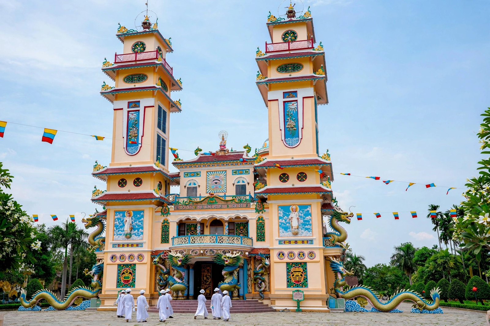

From Wikipedia, the free encyclopedia
| Cao Đài | |
|---|---|
| Classification | Monotheistic syncretic religion |
| Founded | 1926, Tây Ninh, French Indochina (Vietnam) |
| Founder | Ngô Văn Chiêu; Lê Văn Trung and others |
| Headquarters | Tây Ninh Holy See, Vietnam |
| Deity | Cao Đài (the Supreme Being) |
| Symbol | The Divine Eye |
| Adherents | Several million, mostly in Vietnam |

Cao Đài (Vietnamese: Đạo Cao Đài), formally the Đại Đạo Tam Kỳ Phổ Độ ("Great Faith for the Third Period of Universal Salvation"), is a monotheistic syncretic religion founded in southern Vietnam in 1926. Its supreme being is Cao Đài — a name meaning "high palace" or "high tower" — represented by the Divine Eye gazing from a triangle, which appears on every Cao Đài altar. The faith consciously unites the teachings of Buddhism, Taoism, Confucianism, Christianity and Islam, holding that God has revealed truth in successive ages through many messengers and that the present era is the Third Period of revelation and salvation.
The religion began in the spiritist séances held in Saigon and southern Vietnam in the mid-1920s. Ngô Văn Chiêu, a district administrator, became the first disciple after receiving spirit messages; in 1926 a group of officials, including Lê Văn Trung — who became the faith's first acting pope (Hộ Pháp) — formally inaugurated the religion at Tây Ninh, northwest of Saigon. It grew with extraordinary speed, attracting peasants, landowners and colonial officials alike, and by the 1930s claimed adherents in the millions, along with its own army and administration in the Tây Ninh region.
Cao Đài teaches that God (Đức Cao Đài) communicated directly with humanity in this third period because earlier revelations had been distorted. Its pantheon of saints is deliberately universal: alongside the Buddha, Laozi, Confucius, Jesus and Muhammad, it venerates figures such as Joan of Arc, the Chinese statesman Sun Yat-sen and the French writer Victor Hugo, who is regarded as a spirit guide of the faith. Practitioners follow the Five Prohibitions (against killing, stealing, lust, intoxication and false speech), practise vegetarianism for at least part of each month, pray four times daily, and hold séance-derived scripture, the Thánh Ngôn Hiệp Tuyển, as revealed teaching.
The church is governed from the Holy See at Tây Ninh, whose Great Divine Temple (completed in the 1940s–50s) is famous for its vivid, eclectic architecture. Its hierarchy mirrors the Roman Catholic Church, with a pope, cardinals, archbishops and priests, all regarded as chosen through spirit communication; women may hold office up to cardinal. After 1975 the unified Vietnamese state dissolved the church's governing bodies and seized property; Cao Đài was officially recognised again in 1997, though relations with the state remain a sensitive subject.
Baháʼí Faith · Syncretism · New religious movement · Taoism · Confucianism